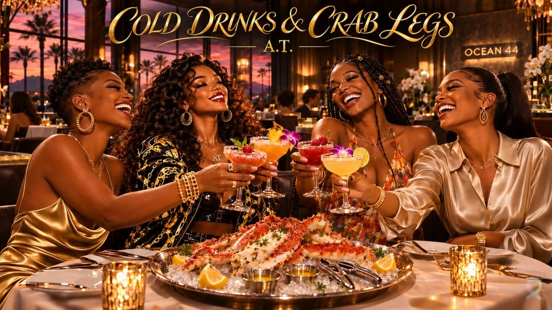

Track 05 · Heart On Pause
Cold Drinks & Crab Legs
Skip the club. Skip the Scottsdale bars. Skip the bowling alley. A.T. and her girls pull up to a table full of king crab and cold drinks with sugar on the rim, and let it all out: the job, the kids, the man, the mama who needs looking after. No judging at this table, just love. Raise your glass, here's to us.
 Watch the official video
Watch the official video
Lyrics
[Intro]
Okay, okay, everybody got a glass?
Put the phones down, ladies... let's go
[Verse 1]
They said "pull up to the club tonight," I said "not this time"
Old Town lines around the block, Scottsdale bars on a Friday night
Bowling alley calling but my heart ain't in the lane
I just need my sisters and a table where we let out all the pain
Tasha had a week from hell, her manager on her back
Keisha's baby boy is teething and she's running on no nap
Monique's taking care of mama and she's tired to the bone
And me, I'm loving somebody who keeps leaving me alone
[Pre Chorus]
So we pulled up, sat down, ordered up and let it go
Pass the butter, pass the napkins
Tell me everything that happened
Ain't no judging at this table
Just love, just love
[Chorus]
Cold drinks and crab legs (hey!)
Sugar on the rim and the laughter never ends (hey!)
We ain't hitting up the club tonight
Got my girls right here and that's alright
Cold drinks and crab legs (hey!)
Crack it open, let it out, my sisters, my friends (hey!)
Raise your glass up to the sky
Here's to us, we gon' be alright
[Verse 2]
Girl, he said he'd call by Tuesday, now it's Friday and it's quiet
And the kids got practice Monday and the rent is still a riot
But we laughing till we crying, then we crying till we laugh
Splitting king crab and the check like we splitting up the past
Somebody said "you deserve better," somebody said "amen"
Somebody squeezed my hand and said "you'll never walk alone again"
That's what sisters do, we hold it down without a fuss
The world can wait outside, tonight it's all about us
[Pre Chorus]
Pass the butter, pass the napkins
Tell me everything that happened
Ain't no judging at this table
Just love, just love
[Chorus]
Cold drinks and crab legs (hey!)
Sugar on the rim and the laughter never ends (hey!)
We ain't hitting up the club tonight
Got my girls right here and that's alright
Cold drinks and crab legs (hey!)
Crack it open, let it out, my sisters, my friends (hey!)
Raise your glass up to the sky
Here's to us, we gon' be alright
[Bridge]
Who got you? (We got you!)
When it's heavy? (We got you!)
When the job, the kids, the man got you stressing? (We got you!)
Who gon' pull up every time? (We got you!)
Cold drinks, crab legs and a little sunshine
[Final Chorus]
Cold drinks and crab legs (hey!)
Sugar on the rim and the laughter never ends (hey!)
We ain't hitting up the club tonight
Got my girls right here and that's alright
Cold drinks and crab legs (hey!)
Crack it open, let it out, my sisters, my friends (hey!)
Raise your glass up to the sky
Here's to us, we gon' be alright
[Outro]
Same time next Friday?
You already know
Cold drinks and crab legs... mmm
Written by Grey Beard and A.T. ℗ & © 2026 Threadia AI, Inc. All rights reserved.